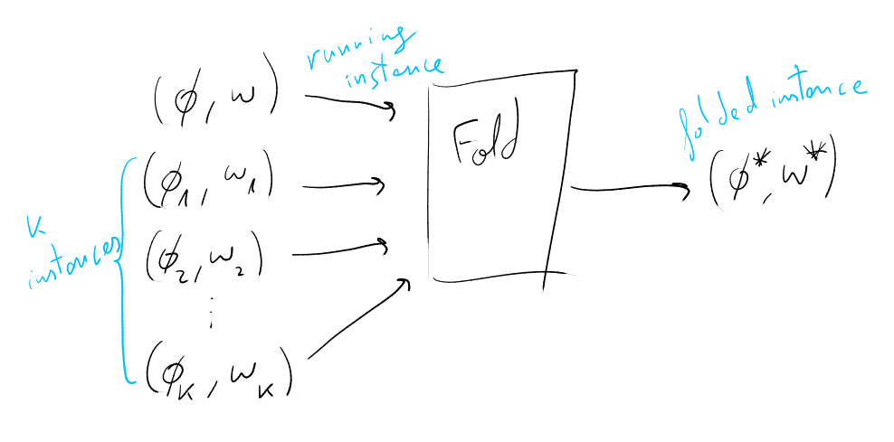
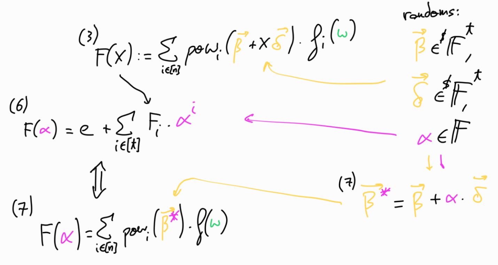

2023-08-20
Note: I’m not a mathematician, just a math enthusiast studying in my free time, and this article is just an attempt to try to sort the notes that I took while studying the ProtoGalaxy scheme.
The idea of these notes is to provide some extra intuition on ProtoGalaxy paper. The paper is very well written and exposes the ideas very clearly, so it’s worth to check directly the paper instead of these notes.
I make use of \(\textcolor{blue}{c}\textcolor{magenta}{o}\textcolor{orange}{l}\textcolor{cyan}{o}\textcolor{green}{u}\textcolor{red}{r}\textcolor{pink}{s}\) to try to relate the different parameters across the scheme.
ProtoGalaxy is a folding scheme which iterates on ideas from ProtoStar paper (here you can find Geometry’s post overviewing its main results and techniques).
For an introduction to folding schemes I highly recommend this talk (at 1:46) by Carlos Perez.
I would like to thank Liam Eagen and Ariel Gabizon for their kind explanations on the scheme. Also thanks to Onur for comments and corrections.
Before jumping into the protocol itself, let’s overview some building blocks first.
In the protocol we need the powers of a random value. We use the \(pow_i\) function to store and operate only \(log(n)\) entries instead of \(n\).
\(pow_i\) is a \(t\)-variate polynomial such that
\[ % pow_i(X_1, \ldots, X_t) = \prod_{i \in [n]} ((1-b_j) + b_j \cdot X^{2^j}) pow_i(X) = \prod_{i \in [n]} ((1-b_j) + b_j \cdot X^{2^j}) \]
where \(b_j\) is the binary decomposition of \(n\), such that \(n = \sum 2^j\).
In our case, we will have \(\overrightarrow{X}\) being \(\overrightarrow{\beta} = \{\beta^{2^i} \}_0^{t-1} = (\beta, \beta^2, \beta^4, \ldots, \beta^{2^{t-1}})\), thus
\[ pow_i(\overrightarrow{\beta}) = \prod_{j \in [n]} ((1-b_j) + b_j \cdot \beta_j) \]
which, basically is a way to have \(pow_i(\overrightarrow{\beta}) = \beta^i\), but storing just \(t\) betas, to actually represent \(2^t\) of them, so we work with \(log\) of the total amount actually used.
So, for example,
\[ i=2_d=10_b;~ pow_2(\overrightarrow{\beta}) = \underbrace{((1-0) + 0 \cdot \beta)}_{1} \cdot \underbrace{((1-1) + 1 \cdot \beta^2)}_{\beta^2} = \beta^2 \\ i=3_d=11_b;~ pow_3(\overrightarrow{\beta}) = \underbrace{((1-1) + 1 \cdot \beta)}_{\beta} \cdot \underbrace{((1-1) + 1 \cdot \beta^2)}_{\beta^2} = \beta^3 \\ i=4_d=100_b;~ pow_4(\overrightarrow{\beta}) = \underbrace{((1-0) + 0 \cdot \beta)}_{1} \cdot \underbrace{((1-0) + 0 \cdot \beta^2)}_{1} \cdot \underbrace{((1-1) + 1 \cdot \beta^4)}_{\beta^4} = \beta^4 \\ i=5_d=101_b;~ pow_5(\overrightarrow{\beta}) = \underbrace{((1-1) + 1 \cdot \beta)}_{\beta} \cdot \underbrace{((1-0) + 0 \cdot \beta^2)}_{1} \cdot \underbrace{((1-1) + 1 \cdot \beta^4)}_{\beta^4} = \beta^5 \]
Let \(\omega\) denote a root of unity, such that \(\omega^N=1\), and set \(\mathbb{H}=\{1, \omega, \omega^2, \ldots, \omega^{N-1}\}\).
Lagrange bases are a whole topic by itself, but for following the next sections, we just need to have a clear intuition on how they operate. The main idea is that
\[L_j(\omega^i)= \begin{cases} &1 ~\text{if}~ i=j\\ &0 ~\text{otherwise} \end{cases} \]
In other words, when we’re evaluating the Lagrange base \(j\) at \(w^i\), the evaluation is going to be \(1\) when \(i=j\), and \(0\) in all the other cases.
To get a bit of more intuition here, let’s represent this visually:
Let the vanishing polynomial of \(\mathbb{H}\) be \(Z(X)=\prod_{i=0}^{N-1} (X - \omega^i) = X^N -1\).
Assume we have a function \(f(X)\) which when evaluated at a valid witness is equal to 0.
For example, in the R1CS case, this would be (for given matrices \(A, B, C \in \mathbb{F}^{m \times m}\) representing our constraints),
\[f(X)= A \cdot X \circ B \cdot X - C \cdot X \]
where \(f(w)=0^n\) if satisfied for a valid witness \(w \in \mathbb{F}^n\).
Our goal will be to prove that we have folded various instantiations of valid witnesses and that they fulfill the check of \(f(w)=0^n\).
The following lemma is from the ProtoGalaxy paper:
Lemma 4.2: Fix any polynomial \(f(X) \in \mathbb{F}[X]\) and \(a_0, \ldots, a_k \in \mathbb{F}\). There exists \(Q(X) \in \mathbb{F}[X]\) such that
\[ f \left( \sum_{i=0}^k a_i L_i(X) \right) = \sum_{i=0}^k f(a_i) L_i(X) + Z(X) Q(X) \]
The way to check that the lemma is true for me was to implement it with code and check that it is satisfied. This is not a proper way, so luckily later Héctor Masip showed me an actual proof of this lemma, which goes as follows:
Recall from the euclidean polynomial division:
For \(f(X), g(X) \in \mathbb{F}[X]\) with \(\deg f \geq \deg g\), \(\exists\) unique polynomials \(q(X), r(X) \in \mathbb{F}[X]\) such that \(f(X) = g(X) q(X) + r(X)\), with \(0 \leq \deg r < \deg g\).
Thus,
\[f(\sum_{i=0}^k a_i \cdot L_i(X)) = Q(X) \cdot Z(X) + r(X)\]
with \(0 \leq \deg r < \deg z = k+1\).
So, when evaluating at \(a_j, ~\forall j=0, \ldots, k\),
\[f(\sum_{i=0}^k a_i \cdot L_i(a_j)) = f(a_j) = \underbrace{Q(a_j) \cdot Z(a_j)}_{0} + r(a_j)\]
so \(f(a_j)=r(a_j)\), therefore
\[r(X) = \sum_{i=0}^k r(a_i) \cdot L_i(X) = \sum_{i=0}^k f(a_i) \cdot L_i(X)\]
The main idea of this scheme, is to be able to fold \(k+1\) instances that satisfy the relation, producing a single folded instance which still satisfies the relation.

Let \((\phi; w)\) be our running instance, the witness is represented by \(w\), and \(\phi = cm(w)\) represents the committed witness. Additionally, we will have \(k\) randomized instance pairs \(( \{ \phi_i \}^k; \{ w_i \}^k )\).
The running instance is paired with two more parameters, so the complete running instance consists of \(((\phi, \overrightarrow{\beta}, e); w)\), where \(e\) is the ‘error’ term and \(\overrightarrow{\beta} \in^R \mathbb{F}^t\) (where \(t=\log(n)\)).
As we start folding instances, the folded instance must satisfy the relation
\[ \sum_{i \in [n]} pow_i(\overrightarrow{\beta}) f_i(w) = e \]
where \(pow_i\) is the function explained in the preliminaries section, and \(f_i\) is the \(i\)-th value from evaluating \(f(w)\).
For the first instance (before folding) \(e=0\), which we can see that matches \(\sum_{i \in [n]} pow_i(\overrightarrow{\beta}) f_i(w) = 0\), since \(f(w)=0^n\) for a valid \(w\).
We want a way for the Prover to fold \(k+1\) instances into a single one, combining them while ensuring that they satisfy the relation by showing that \(f(w_i)=0\) for all \(k+1\) instances.
For doing so, we could just add all the instances naively, but they could cancel each other giving \(0\) when evaluated at the different \(w_i\), even when individually don’t evaluate at \(0\).
One way to combine the instances is through making use of a random linear combination (as done in Nova and ProtoStar), but when combining \(k\) instances the degree of the cross-terms would grow exponentially. Thus ProtoGalaxy uses the Lagrange bases, by associating each instance to a different Lagrange coefficient, thus keeping the instances ‘separated’ while being combined in the same expression.
(Let P denote the Prover, and V the Verifier)
V sends a challenge \(\delta \in^R \mathbb{F}\)
P, V compute \(\overrightarrow{\delta} = \{\delta^{2^i} \}_0^{t-1} = (\delta, \delta^2, \delta^4, \ldots, \delta^{2^{t-1}}) \in \mathbb{F}^t\)
P computes the polynomial
\[ F(X) := \sum_{i \in [n]} pow_i( \underbrace{ \textcolor{orange}{\overrightarrow{\beta}} + X \cdot \textcolor{orange}{\overrightarrow{\delta} } }_\text{represent it by $\textcolor{orange}{\overrightarrow{\eta}}$} ) \textcolor{ForestGreen}{f_i(w)} \\ \text{\scriptsize{where $\textcolor{orange}{\overrightarrow{\eta}}$ is just an intermediate}} \\ \text{\scriptsize{representation of the new random vector over $X$}} \\ \text{\scriptsize{where $\overrightarrow{\eta}=\{ \beta+X \delta, \beta^2 + X \delta^2, \beta^4 +X \delta^4, \ldots, \beta^{2^{t-1}} + X \delta^{2^{t-1}} \}$}} \\ = \sum_{i \in [n]} pow_i(\textcolor{orange}{\overrightarrow{\eta}}) \textcolor{ForestGreen}{f_i(w)} \]
Notice that each \(pow_i(\textcolor{orange}{\overrightarrow{\eta}})\) will be a polynomial of degree equal to the number of positive bits in the binary representation of \(i\).
So, for example \(pow_{255}\), since \(i=255_d = 11111111_b\), will have degree \(8\). But \(pow_{256}\), since \(i=256_d= 100000000_b\), will have degree \(1\).
Notice also that when \(X=0\), \(\overrightarrow{\eta}=\overrightarrow{\beta}\), so we’re left with the original equation \(F(0)=\sum_{i\in[n]} pow_i(\textcolor{orange}{\overrightarrow{\beta}}) \textcolor{ForestGreen}{f_i(w)} = e\).
P sends non constant coefficients \(F_1, \ldots, F_t\) of \(F(X)\) to V
V sends a challenge \(\textcolor{magenta}{\alpha} \in^R \mathbb{F}\)
P, V compute \(F(\textcolor{magenta}{\alpha}) = e + \sum_{i \in [t]} \textcolor{ForestGreen}{F_i} \textcolor{magenta}{\alpha^i}\)
P, V compute \(\textcolor{orange}{\overrightarrow{\beta}}\textcolor{magenta}{^*} \in \mathbb{F}^t\) where \(\textcolor{orange}{\beta_i \textcolor{magenta}{^*}} := \textcolor{orange}{\beta_i} + \textcolor{magenta}{\alpha} \cdot \textcolor{orange}{\delta^{2^{i-1}}}\)
Notice that \(\textcolor{orange}{\overrightarrow{\beta}}\textcolor{magenta}{^*} = \textcolor{orange}{\overrightarrow{\beta}} + \textcolor{magenta}{\alpha} \cdot \textcolor{orange}{\overrightarrow{\delta}}\), is the same as \(\textcolor{orange}{\overrightarrow{\eta}}\) with \(X=\textcolor{magenta}{\alpha}\).
We have now a new randomized instance \((\textcolor{orange}{\overrightarrow{\beta}}\textcolor{magenta}{^*}, w, F(\alpha))\), for which the relation from the equation (1) holds:
\[F(\textcolor{magenta}{\alpha}) = \sum_{i \in [n]} pow_i(\textcolor{orange}{\overrightarrow{\beta}}\textcolor{magenta}{^*}) \textcolor{ForestGreen}{f(w)}\]
since both sides of the equality represent some \(\textcolor{magenta}{re-randomized}\) (eg. \(\textcolor{magenta}{\alpha}\)) \(\textcolor{orange}{random~value}\) (eg. \(\textcolor{orange}{\overrightarrow{\beta}, ~\overrightarrow{\delta}}\)) combined with the \(\textcolor{ForestGreen}{evaluated~function}\) (eg. \(\textcolor{ForestGreen}{f(w)}\)).
The following image tries to show how the previous steps relate: 
P computes the polynomial
\[ G(X) := \sum_{i \in [n]} pow_i(\overrightarrow{\beta^*}) \cdot f_i(L_0(X) w + \sum_{j \in [k]} L_j(X) w_j) \]
\[ G(X) := \sum_{i \in [n]} pow_i(\overrightarrow{\beta^*}) \cdot \underbrace{ f_i(\textcolor{SkyBlue}{L_0(X)} w }_{\textcolor{SkyBlue}{L_0(X)} \cdot f_i(w)} + \underbrace{ \sum_{j \in [k]} \textcolor{SkyBlue}{L_j(X)} w_j) }_{0} \\ \text{\small{ notice that $f_i(w_j)=0 ~\forall j \in [k], i \in [n]$, thus $\sum_{j \in [k]} \textcolor{SkyBlue}{L_j(X)} \cdot f_i(w_j) = 0$ }} \\ = \sum_{i \in [n]} \underbrace{ pow_i(\overrightarrow{\beta^*}) \cdot f_i(w) }_{F(\alpha) ~\text{from step 6}} \cdot \textcolor{SkyBlue}{L_0(X)} \pmod{Z(X)} \\ = F(\alpha) \cdot \textcolor{SkyBlue}{L_0(X)} \pmod{Z(X)} \]
which leads to the next step.
P computes the polynomial \(K(X)\) such that
\[G(X) = F(\alpha) L_0(X) + Z(X) K(X)\]
(Recall, \(F(\alpha)\) ‘contains’ the ’re-randomized’ expression comming from \(\textcolor{magenta}{\alpha}\) combined with \(\textcolor{orange}{\overrightarrow{\beta},~ \overrightarrow{\delta}}\), combined with \(\textcolor{ForestGreen}{f(w)}\) from step 7).
What we’re using here is the same trick that we can find in Plonk, KZG commitments, and other known protocols (which, in fact was proposed by Eli Ben-Sasson & Madhu Sudan in 2008).
We’re using the fact that if \(P(X)/Z(X)\) leads to a polynomial (and not to a rational function) means that \(P(X)\) is divisible by \(Z(X)\) (the vanishing polynomial), which means that \(P(X)\) vanishes over the evaluation domain. From another perspective, there exists a polynomial \(K(X)\) such that \(P(X) = Z(X) \cdot K(X)\).
Here we’re using this fact with \(K(X)\), where if exists a \(K(X)\) such that \(G(X)- F(\alpha)L_0(X) = Z(X)K(X)\), means that \(G(X)-F(\alpha)L_0(X)\) vanishes over the evaluation domain.
P sends the coefficients \(K_1, \ldots, K_t\) of \(K(X)\) to V
V sends a challenge \(\gamma \in^R \mathbb{F}\)
P, V compute
\[e^* := F(\alpha) L_0(\gamma) + Z(\gamma) K(\gamma)\]
P, V outputs the new folded committed instance
\[\Phi^* = (\phi^*, \overrightarrow{\beta^*}, e^*)\]
where
\[\phi^* = L_0(\gamma) \phi + \sum_{i \in [k]} L_i(\gamma) \cdot \phi_i\]
Recall from Lagrange bases section, that the intuition behind Lagrange bases usage is to ‘select’ the different values associated to each \(L_i\). The idea here is that we are combinning the different instances into a new instance, while keeping them ‘separated’ by the different \(L_i\).
Additionally, P outputs the folded witness
\[w^* = L_0(\gamma) w + \sum_{i \in [k]} L_i(\gamma) \cdot w_i\]
To check that \((\Phi^*; w^*)\) satisfies the relation we check that
\[\sum_{i \in [n]} pow_i(\overrightarrow{\beta^*}) \cdot f_i(w^*) = e^*\]
As usual, this interactive protocol is converted into a non-interactive one through the Fiat-Shamir transformation.
As mentioned initially, the ProtoGalaxy paper is very well written and clear, so I highly recommend reading it to get the full explaination and proofs. Hopefully these notes might have provided some intuition behind the steps helping to follow the paper descriptions.
One thing to mention is that we’ve covered the version of the protocol presented in the section 4 of the paper, which has prover costs \(O(k \log k)\) and verifier costs \(O(k)\). In section 5, the protocol is modified to obtain prover costs \(O(k)\) and verifier costs \(O(\log k)\), at the expense of worse constant costs, which makes it more suitable for larger \(k\) (more instances folded in each step). The main idea is by replacing the vanishing polynomial check with the SumCheck protocol, which internally works with similar equations that we had before, but replacing the Lagrange bases \(\textcolor{SkyBlue}{L_j(X)}\) by the equivalent over the multilinar extension world \(\textcolor{SkyBlue}{eq(x, t)}\).
Which for example, the equation that we had on the step 8:
\[ \textcolor{gray}{ G(X) := \sum_{i \in [n]} pow_i(\overrightarrow{\beta^*}) \cdot f_i \left( \sum_{j=0}^k \textcolor{SkyBlue}{L_j(X)} w_j \right) } \]
is now replaced by
\[ G(t) := eq(t, \overrightarrow{\delta^n}) \sum_{i \in [n]} pow_i(\overrightarrow{\beta^*}) \cdot f_i \left( \sum_{j'=0} \textcolor{SkyBlue}{eq(t, j')} w_j' \right) \]
Further details can be found at section 5 of the paper.
I’m still discovering all the marvelous world of folding schemes, trying to grasp intuition across the different designs. One thing that will be interesting is to be able to benchmark on the practical side all the different folding schemes to see how they work in practice, and for example depending on the use case, evaluate for which threshold of \(k\) makes sense to switch between them, and which \(k\) makes sense for different use cases in the context of parallelizing folding.
In the repo https://github.com/arnaucube/protogalaxy-poc you can find a proof of concept implementation of the ProtoGalaxy scheme described in this post.
{kind=link}